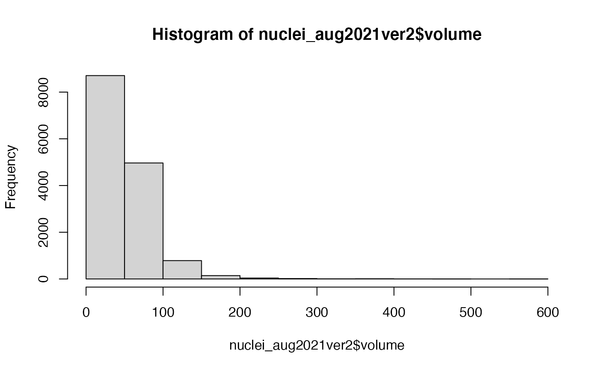
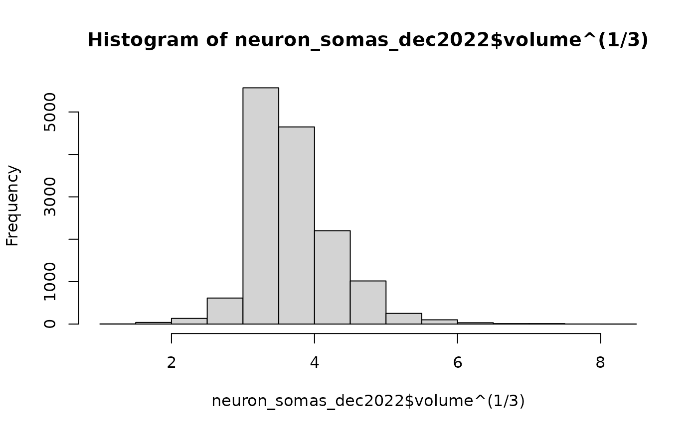

Query FANC tables in the CAVE annotation system
Usage
fanc_cave_query(
table,
datastack_name = NULL,
version = NULL,
timestamp = NULL,
live = is.null(version),
timetravel = FALSE,
filter_in_dict = NULL,
filter_out_dict = NULL,
filter_regex_dict = NULL,
select_columns = NULL,
offset = 0L,
limit = NULL,
fetch_all_rows = FALSE,
...
)
banc_cave_query(
table,
datastack_name = NULL,
version = NULL,
timestamp = NULL,
live = is.null(version),
timetravel = FALSE,
filter_in_dict = NULL,
filter_out_dict = NULL,
filter_regex_dict = NULL,
select_columns = NULL,
offset = 0L,
limit = NULL,
fetch_all_rows = FALSE,
...
)Arguments
- table
The name of the table (or view, see views section) to query
- datastack_name
An optional CAVE
datastack_name. If unset a sensible default is chosen.- version
An optional CAVE materialisation version number. See details and examples.
- timestamp
An optional timestamp as a string or POSIXct, interpreted as UTC when no timezone is specified.
- live
Whether to use live query mode, which updates any root ids to their current value (or to another
timestampwhen provided). Values ofTRUEor1select CAVE's Live mode, while2selectsLive livemode which gives access even to annotations that are not part of a materialisation version. See section Live and Live Live queries for details.- timetravel
Whether to interpret
version/timestampas a defined point in the past to which the very latest annotations will be sent back in time, recalculating root ids as necessary.- filter_in_dict, filter_out_dict, filter_regex_dict
Optional arguments consisting of key value lists that restrict the returned rows (keeping only matches or filtering out matches). Commonly used to selected rows for specific neurons. See examples and CAVE documentation for details.
- select_columns
Either a character vector naming columns or a python dict (required if the query involves multiple tables).
- offset
a 0-indexed row number, allows you to page through long results (but see section CAVE Row Limits for some caveats)
- limit
whether to limit the number of rows per query (
NULLimplies no client side limit but there is typically a server side limit of 500,000 rows).- fetch_all_rows
Whether to fetch all rows of a query that exceeds limit (default
FALSE). See section CAVE Row Limits for some caveats.- ...
Additional arguments passed to
flywire_cave_query
Examples
# \donttest{
#nucleus_mar2022=fanc_cave_query(table = "nucleus_mar2022")
neuron_somas_dec2022=fanc_cave_query(table = "neuron_somas_dec2022")
head(neuron_somas_dec2022)
#> # A tibble: 6 × 13
#> id created valid target_id id_ref created_ref valid_ref
#> <int> <dttm> <chr> <int64> <int6> <dttm> <chr>
#> 1 7e16 2022-12-19 14:39:30 t 7e16 7e16 2022-12-04 01:45:28 t
#> 2 7e16 2022-12-19 14:39:30 t 7e16 7e16 2022-12-04 01:45:28 t
#> 3 7e16 2022-12-19 14:39:30 t 7e16 7e16 2022-12-04 01:45:28 t
#> 4 7e16 2022-12-19 14:39:30 t 7e16 7e16 2022-12-04 01:45:28 t
#> 5 7e16 2022-12-19 14:39:30 t 7e16 7e16 2022-12-04 01:45:28 t
#> 6 7e16 2022-12-19 14:39:30 t 7e16 7e16 2022-12-04 01:45:28 t
#> # ℹ 6 more variables: volume <dbl>, pt_supervoxel_id <int64>,
#> # pt_root_id <int64>, pt_position <list<integer>>,
#> # bb_start_position <list<double>>, bb_end_position <list<double>>
hist(neuron_somas_dec2022$volume)

hist(neuron_somas_dec2022$volume^(1/3))

# }
if (FALSE) { # \dontrun{
points3d(fanc_raw2nm(neuron_somas_dec2022$pt_position), col='red')
} # }
if (FALSE) { # \dontrun{
library(dplyr)
cell_info=banc_cave_query('cell_info')
cell_info %>%
filter(tag2=='anterior-posterior projection pattern') %>%
count(tag)
} # }